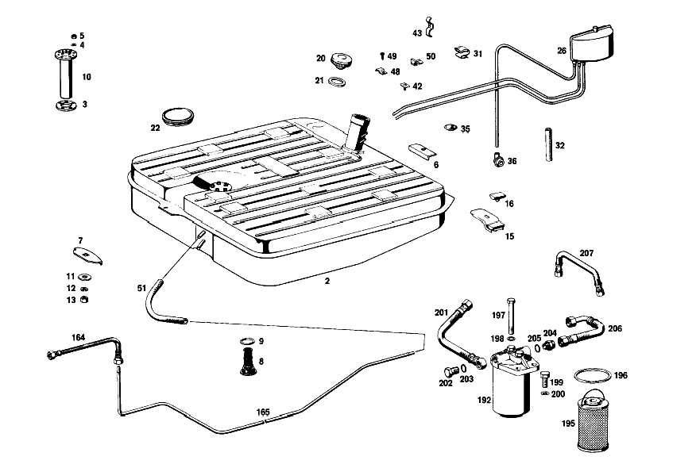

| № | Артикул | Название | Кол. | Примечание | Ограничение |
|---|---|---|---|---|---|
| 2 | A 109 470 03 01 | Бак | 1 | 82 L. | |
| 3 | A 110 471 01 80 | - Уплотнение | 1 | ||
| 4 | N 000137 005203 | - Пружинная шайба | 5 | ||
| 5 | N 000934 005008 | - Гайка | 5 | M5 | |
| 6 | A 130 471 02 22 | - Косынка | 2 | СЗАДИ | |
| 7 | A 130 471 01 22 | - Косынка | 1 | СПЕРЕДИ | |
| 8 | A 111 470 06 86 | - Фильтр топливного бака | 1 | ||
| 9 | A 110 997 01 45 | - УПЛОТНИТ. КОЛЬЦО | 1 | ||
| 10 | A 110 542 12 04 | Указатель уровня топлива | 1 | ||
| 11 | A 108 990 03 40 | Диск | 3 | ТОПЛИВНЫЙ БАК | |
| 12 | N 000127 008203 | Пружинное кольцо | 3 | ТОПЛИВНЫЙ БАК | |
| 13 | N 000934 008013 | Гайка | 3 | ТОПЛИВНЫЙ БАК | |
| 15 | A 112 470 07 81 | ДЕРЖАТЕЛЬ | 1 | ||
| 16 | A 124 987 07 40 | - Резиновый буфер | 1 | ||
| 20 | A 124 470 00 05 | Крышка горл. топ. бака | 1 | ||
| 21 | A 110 471 02 80 | - Уплотнение | 1 | TO 110 470 08 05,100 470 01 05 | |
| 22 | A 110 987 01 45 | Колпачок | 1 | ||
| 27 | A 115 471 16 68 | Расширительный бачок | 1 | [017] 016 FROM CHASSIS 002221; 018 FROM CHASSIS 002839 ALSO INSTALLED ON 002816, 002818, 002822, 002835, 002837 | |
| 28 | A 008 997 90 82 | ПЛАСТИКОВАЯ ТРУБКА | - | 8X1MM [404] ЗАКАЗЫВАТЬ ПОГОННЫМИ МЕТРАМИ | |
| 28 | A 000 290 10 00 | Пластиковая трубка | 1 | 8x1mm [404] ЗАКАЗЫВАТЬ ПОГОННЫМИ МЕТРАМИ [017] 016 FROM CHASSIS 002221; 018 FROM CHASSIS 002839 ALSO INSTALLED ON 002816, 002818, 002822, 002835, 002837 [005] ЗАКАЗЫВАТЬ ПОГОННЫМИ МЕТРАМИ [019] 057 UP TO CHASSIS 000135 | |
| 29 | A 123 470 01 93 | Клапан | 1 | ||
| 31 | A 003 988 81 78 | Скоба | 2 | ||
| 32 | A 201 476 11 26 | Шланг | NB | для RETURN LINE 5 MM; 4.5X3 MM [404] ЗАКАЗЫВАТЬ ПОГОННЫМИ МЕТРАМИ [005] ЗАКАЗЫВАТЬ ПОГОННЫМИ МЕТРАМИ | |
| 35 | A 111 997 22 81 | резиновая втулка | 1 | ||
| 40 | A 003 988 81 78 | Скоба | 4 | EXPANSION TANK TO CARDBOARD WALL [017] 016 FROM CHASSIS 002221; 018 FROM CHASSIS 002839 ALSO INSTALLED ON 002816, 002818, 002822, 002835, 002837 | |
| 41 | A 000 988 18 78 | Скоба | 3 | LINE TO CARDBOARD WALL [017] 016 FROM CHASSIS 002221; 018 FROM CHASSIS 002839 ALSO INSTALLED ON 002816, 002818, 002822, 002835, 002837 | |
| 48 | N 072571 002015 | Хомут | 3 | ||
| 49 | N 007981 004243 | Шуруп | - | ||
| 49 | N 000000 002062 | Шуруп | 3 | ||
| 50 | A 002 988 46 78 | Скоба | 1 | ||
| 55 | A 008 997 90 82 | ПЛАСТИКОВАЯ ТРУБКА | - | 8X1MM [404] ЗАКАЗЫВАТЬ ПОГОННЫМИ МЕТРАМИ | |
| 55 | A 000 290 10 00 | Пластиковая трубка | 1 | FRONT FROM EXPANSION TANK TO ENGINE; 8x1mm [404] ЗАКАЗЫВАТЬ ПОГОННЫМИ МЕТРАМИ [017] 016 FROM CHASSIS 002221; 018 FROM CHASSIS 002839 ALSO INSTALLED ON 002816, 002818, 002822, 002835, 002837 [005] ЗАКАЗЫВАТЬ ПОГОННЫМИ МЕТРАМИ | |
| 56 | A 114 471 02 23 | Трубопровод | 1 | РАСШИРИТ. БАЧОК К ДВИГ. [017] 016 FROM CHASSIS 002221; 018 FROM CHASSIS 002839 ALSO INSTALLED ON 002816, 002818, 002822, 002835, 002837 | |
| 60 | A 008 997 90 82 | ПЛАСТИКОВАЯ ТРУБКА | - | 8X1MM [404] ЗАКАЗЫВАТЬ ПОГОННЫМИ МЕТРАМИ | |
| 60 | A 000 290 10 00 | Пластиковая трубка | 1 | REAR FROM EXPANSION TANK TO ENGINE; 8x1mm [404] ЗАКАЗЫВАТЬ ПОГОННЫМИ МЕТРАМИ [017] 016 FROM CHASSIS 002221; 018 FROM CHASSIS 002839 ALSO INSTALLED ON 002816, 002818, 002822, 002835, 002837 [005] ЗАКАЗЫВАТЬ ПОГОННЫМИ МЕТРАМИ | |
| 68 | A 109 995 00 22 | хомут | NB | ТРУБОПРОВОД [017] 016 FROM CHASSIS 002221; 018 FROM CHASSIS 002839 ALSO INSTALLED ON 002816, 002818, 002822, 002835, 002837 | |
| 70 | A 000 995 00 68 | хомут | 16 | ТРУБОПРОВОД [017] 016 FROM CHASSIS 002221; 018 FROM CHASSIS 002839 ALSO INSTALLED ON 002816, 002818, 002822, 002835, 002837 | |
| 77 | N 073379 008100 | Шланг | NB | 20 MM PIPE LINE [017] 016 FROM CHASSIS 002221; 018 FROM CHASSIS 002839 ALSO INSTALLED ON 002816, 002818, 002822, 002835, 002837 [005] ЗАКАЗЫВАТЬ ПОГОННЫМИ МЕТРАМИ | |
| 78 | A 007 997 58 81 | втулка | 1 | ТРУБОПРОВОД [017] 016 FROM CHASSIS 002221; 018 FROM CHASSIS 002839 ALSO INSTALLED ON 002816, 002818, 002822, 002835, 002837 | |
| 114 | N 000933 006130 | Винт | 2 | [029] 056, 057 UP TO CHASSIS 005792 | |
| 115 | A 000 997 28 81 | Проходная втулка | 2 | [029] 056, 057 UP TO CHASSIS 005792 | |
| 117 | A 094 990 68 10 | Пружинное кольцо | 3 | DAMPER CAGE AND FUEL HOSE TO FRAME FLOOR UNIT [029] 056, 057 UP TO CHASSIS 005792 | |
| 119 | A 108 995 05 20 | хомут | 1 | DAMPER CAGE AND FUEL HOSE TO FRAME FLOOR UNIT | |
| 123 | A 112 470 00 33 | УСИЛИТЕЛЬ | 1 | ||
| 124 | A 000 987 38 41 | КОЛЬЦО РЕЗИНОВОЕ | NB | ||
| 134 | A 126 988 00 11 | Буфер | 3 | [029] 056, 057 UP TO CHASSIS 005792 | |
| 137 | N 000127 005203 | Пружинное кольцо | 2 | РЕЗИНОМЕТАЛЛИЧЕСКИЙ БУФЕР НА КРОНШТЕЙНЕ [029] 056, 057 UP TO CHASSIS 005792 | |
| 139 | N 000934 005008 | Гайка | 2 | РЕЗИНОМЕТАЛЛИЧЕСКИЙ БУФЕР НА КРОНШТЕЙНЕ; M5 [029] 056, 057 UP TO CHASSIS 005792 | |
| 142 | N 000127 005203 | Пружинное кольцо | 2 | ТОПЛ. НАСОС НА ДЕРЖАТ. [029] 056, 057 UP TO CHASSIS 005792 | |
| 143 | N 000934 005008 | Гайка | 2 | ТОПЛ. НАСОС НА ДЕРЖАТ.; M5 [029] 056, 057 UP TO CHASSIS 005792 | |
| 144 | N 000125 005306 | ШАЙБА | 2 | ТОПЛ. НАСОС НА ДЕРЖАТ. [029] 056, 057 UP TO CHASSIS 005792 | |
| 145 | A 108 470 00 83 | ЗАЩИТНАЯ ПАНЕЛЬ | 1 | ||
| 147 | A 094 990 68 10 | Пружинное кольцо | 3 | ||
| 149 | A 108 546 01 85 | ПРЕДОХРАНИТЕЛЬНАЯ ТРУБКА | 1 | ||
| 175 | A 110 995 00 22 | хомут | NB | ||
| 176 | A 112 995 02 22 | хомут | 1 | ||
| 177 | A 110 995 00 15 | хомут | 2 | ||
| 178 | A 153 995 01 20 | хомут | 1 | ||
| 188 | A 120 420 02 27 | Т-образный винт | 1 | с LOCK PLATE FUEL LINES TO FRONT SUBFRAME AND TO FRAME FLOOR UNIT | |
| 189 | A 000 987 38 41 | КОЛЬЦО РЕЗИНОВОЕ | 2 | ||
| 191 | N 000934 006007 | Гайка | 2 | ||
| 193 | A 000 092 71 01 | ФИЛЬТР | - | ||
| N 000933 006102 | Винт | - | |||
| N 304017 006016 | Винт с 6-гранной головкой | 1 | ДЕРЖАТЕЛЬ НА КАБИНЕ; M6X16 | ||
| A 094 990 68 10 | Пружинное кольцо | 1 | ДЕРЖАТЕЛЬ НА КАБИНЕ | ||
| N 009021 006103 | Шайба | - | |||
| N 009021 006208 | Шайба | 1 | ДЕРЖАТЕЛЬ НА КАБИНЕ; 6 MM | ||
| A 000 990 99 91 | Гайкодержатель | 1 | ДЕРЖАТЕЛЬ НА КАБИНЕ | ||
| A 115 471 00 79 | - Уплотнительное кольцо | 1 | TO 000 471 63 30 | ||
| A 123 470 01 93 | Клапан | 1 | [020] 057 FROM CHASSIS 000136 | ||
| A 107 471 00 42 | ФИЛЬТР | 1 | [402] БОЛЬШЕ НЕ ПОСТАВЛЯЕТСЯ [020] 057 FROM CHASSIS 000136 | ||
| A 107 471 02 67 | КРЫШКА | 1 | [417] БОЛЬШЕ НЕ ПОСТАВЛЯЕТСЯ, ЗАКАЗЫВАТЬ КОМПЛЕКТ ПОСТАВКИ [020] 057 FROM CHASSIS 000136 | ||
| N 007976 004211 | Шуруп | 2 | 4,8X25 [020] 057 FROM CHASSIS 000136 | ||
| A 000 987 00 44 | Запорная шайба | 1 | [020] 057 FROM CHASSIS 000136 | ||
| A 107 470 00 93 | КЛАПАН | - | [020] 057 FROM CHASSIS 000136 | ||
| N 916033 012100 | Хомут | 1 | [017] 016 FROM CHASSIS 002221; 018 FROM CHASSIS 002839 ALSO INSTALLED ON 002816, 002818, 002822, 002835, 002837 [019] 057 UP TO CHASSIS 000135 | ||
| N 916002 008100 | Хомут | 4 | HOSES TO VENT PIPES AND TO PLASTIC PIPE [017] 016 FROM CHASSIS 002221; 018 FROM CHASSIS 002839 ALSO INSTALLED ON 002816, 002818, 002822, 002835, 002837 | ||
| N 916033 012100 | Хомут | 1 | РАСШИРИТ. БАЧОК К ДВИГ. [017] 016 FROM CHASSIS 002221; 018 FROM CHASSIS 002839 ALSO INSTALLED ON 002816, 002818, 002822, 002835, 002837 | ||
| N 072571 001025 | Хомут | NB | ТРУБОПРОВОД [017] 016 FROM CHASSIS 002221; 018 FROM CHASSIS 002839 ALSO INSTALLED ON 002816, 002818, 002822, 002835, 002837 | ||
| N 007976 004205 | Шуруп | NB | ТРУБОПРОВОД [017] 016 FROM CHASSIS 002221; 018 FROM CHASSIS 002839 ALSO INSTALLED ON 002816, 002818, 002822, 002835, 002837 | ||
| N 007981 004243 | Шуруп | - | |||
| N 000000 002062 | Шуруп | 3 | ТРУБОПРОВОД [017] 016 FROM CHASSIS 002221; 018 FROM CHASSIS 002839 ALSO INSTALLED ON 002816, 002818, 002822, 002835, 002837 | ||
| N 072571 002015 | Хомут | 3 | ТРУБОПРОВОД | ||
| A 001 997 41 90 | Кабельная стяжка | 1 | ТРУБОПРОВОД; 7X100 MM | ||
| N 007976 006203 | Шуруп | 1 | ТРУБОПРОВОД; B6,3X13 | ||
| A 001 091 71 01 | Подкачивающий насос | 1 | ЭЛЕКТРИЧЕСКИЙ [030] 056, 057 FROM CHASSIS 005793 | ||
| A 116 470 04 81 | ДЕРЖАТЕЛЬ | - | |||
| A 123 470 03 81 | Держатель | 1 | PUMP AND FILTER TO BRACKET [030] 056, 057 FROM CHASSIS 005793 | ||
| N 007985 005165 | Винт | 2 | PUMP AND FILTER TO BRACKET [030] 056, 057 FROM CHASSIS 005793 | ||
| N 912004 005100 | Пружинное кольцо | 2 | PUMP AND FILTER TO BRACKET [030] 056, 057 FROM CHASSIS 005793 | ||
| N 000934 005008 | Гайка | 2 | PUMP AND FILTER TO BRACKET; M5 [030] 056, 057 FROM CHASSIS 005793 | ||
| A 108 478 07 40 | ДЕРЖАТЕЛЬ | 1 | СЛЕВА [030] 056, 057 FROM CHASSIS 005793 | ||
| A 108 478 08 40 | ДЕРЖАТЕЛЬ | 1 | СПРАВА [030] 056, 057 FROM CHASSIS 005793 | ||
| A 126 988 00 11 | Буфер | 3 | [030] 056, 057 FROM CHASSIS 005793 | ||
| N 912004 005100 | Пружинное кольцо | 6 | ДЕРЖАТЕЛЬ НА КРОНШТЕЙНЕ (СЛЕВА И СПРАВА) [030] 056, 057 FROM CHASSIS 005793 | ||
| N 000934 005008 | Гайка | 6 | ДЕРЖАТЕЛЬ НА КРОНШТЕЙНЕ (СЛЕВА И СПРАВА); M5 [030] 056, 057 FROM CHASSIS 005793 | ||
| A 114 997 18 82 | ШЛАНГ | NB | 13.3X3 MM [404] ЗАКАЗЫВАТЬ ПОГОННЫМИ МЕТРАМИ [005] ЗАКАЗЫВАТЬ ПОГОННЫМИ МЕТРАМИ [030] 056, 057 FROM CHASSIS 005793 | ||
| A 114 997 18 82 | - ШЛАНГ | 1 | 140 MM FROM PUMP PRESSURE FITTING TO ELBOW FITTING AT FILTER; 13.3X3 MM [404] ЗАКАЗЫВАТЬ ПОГОННЫМИ МЕТРАМИ [030] 056, 057 FROM CHASSIS 005793 | ||
| A 114 997 18 82 | - ШЛАНГ | 1 | 460 MM FILTER OUTLET; 13.3X3 MM [404] ЗАКАЗЫВАТЬ ПОГОННЫМИ МЕТРАМИ [030] 056, 057 FROM CHASSIS 005793 | ||
| A 114 997 18 82 | - ШЛАНГ | 1 | 280 MM RETURN LINE TO TANK; 13.3X3 MM [404] ЗАКАЗЫВАТЬ ПОГОННЫМИ МЕТРАМИ [030] 056, 057 FROM CHASSIS 005793 | ||
| A 001 997 69 90 | Хомут для шланга | 4 | 9\-13 MM [030] 056, 057 FROM CHASSIS 005793 | ||
| A 112 476 12 26 | Шланг | NB | 220 MM AT PUMP SUCTION FITTING [005] ЗАКАЗЫВАТЬ ПОГОННЫМИ МЕТРАМИ [030] 056, 057 FROM CHASSIS 005793 | ||
| N 916002 017100 | Хомут | 2 | [030] 056, 057 FROM CHASSIS 005793 | ||
| A 108 995 05 20 | хомут | 1 | FUEL HOSE TO BODY FLOOR [030] 056, 057 FROM CHASSIS 005793 | ||
| N 000934 004004 | Гайка | 1 | CABLE TO ELECTRIC FUEL PUMP; M4 | ||
| N 006797 004132 | Зубчатая шайба | 1 | CABLE TO ELECTRIC FUEL PUMP; M4 | ||
| N 006797 005132 | Зубчатая шайба | 1 | CABLE TO ELECTRIC FUEL PUMP; M5 | ||
| N 000934 005008 | Гайка | 1 | CABLE TO ELECTRIC FUEL PUMP; M5 | ||
| N 912004 005100 | Пружинное кольцо | 1 | |||
| N 007985 005165 | Винт | 1 | |||
| A 114 997 18 82 | ШЛАНГ | 1 | PUMP TO FILTER; 13.3X3 MM [404] ЗАКАЗЫВАТЬ ПОГОННЫМИ МЕТРАМИ [005] ЗАКАЗЫВАТЬ ПОГОННЫМИ МЕТРАМИ | ||
| A 001 997 69 90 | Хомут для шланга | 1 | 9\-13 MM | ||
| A 109 476 17 01 | ПРОВОД | 1 | FEED [030] 056, 057 FROM CHASSIS 005793 | ||
| A 108 476 17 01 | ПРОВОД | 1 | [022] 056, 057 FROM CHASSIS 005107 [023] 056, 057 UP TO CHASSIS 007284 EXCEPT FOR, SEE FOOTNOTE 27 [027] 007216- 007218, 007221, 007222, 007225, 007230, 007232, 007234, 007237, 007239, 007240, 007243- 007251, 007253, 007261, 007263, 007266, 007267, 007276, 007280, 007281. | ||
| A 108 476 18 01 | ПРОВОД | 1 | [024] 056, 057 FROM CHASSIS 007285 ALSO INSTALLED ON, SEE FOOTNOTE 27 [027] 007216- 007218, 007221, 007222, 007225, 007230, 007232, 007234, 007237, 007239, 007240, 007243- 007251, 007253, 007261, 007263, 007266, 007267, 007276, 007280, 007281. [025] 056 UP TO CHASSIS 007927; 057 UP TO CHASSIS 000419 | ||
| A 108 476 23 01 | ПРОВОД | 1 | [024] 056, 057 FROM CHASSIS 007285 ALSO INSTALLED ON, SEE FOOTNOTE 27 [027] 007216- 007218, 007221, 007222, 007225, 007230, 007232, 007234, 007237, 007239, 007240, 007243- 007251, 007253, 007261, 007263, 007266, 007267, 007276, 007280, 007281. | ||
| N 073379 008100 | Шланг | 1 | 30 MM [005] ЗАКАЗЫВАТЬ ПОГОННЫМИ МЕТРАМИ [024] 056, 057 FROM CHASSIS 007285 ALSO INSTALLED ON, SEE FOOTNOTE 27 [027] 007216- 007218, 007221, 007222, 007225, 007230, 007232, 007234, 007237, 007239, 007240, 007243- 007251, 007253, 007261, 007263, 007266, 007267, 007276, 007280, 007281. | ||
| A 108 995 05 20 | хомут | 1 | [024] 056, 057 FROM CHASSIS 007285 ALSO INSTALLED ON, SEE FOOTNOTE 27 [027] 007216- 007218, 007221, 007222, 007225, 007230, 007232, 007234, 007237, 007239, 007240, 007243- 007251, 007253, 007261, 007263, 007266, 007267, 007276, 007280, 007281. | ||
| N 007976 005203 | Шуруп | 1 | [024] 056, 057 FROM CHASSIS 007285 ALSO INSTALLED ON, SEE FOOTNOTE 27 [027] 007216- 007218, 007221, 007222, 007225, 007230, 007232, 007234, 007237, 007239, 007240, 007243- 007251, 007253, 007261, 007263, 007266, 007267, 007276, 007280, 007281. | ||
| A 108 476 24 01 | ПРОВОД | 1 | СЗАДИ | ||
| A 114 476 20 26 | ШЛАНГ | - | |||
| A 114 997 18 82 | ШЛАНГ | 1 | 160 MM; 13.3X3 MM [404] ЗАКАЗЫВАТЬ ПОГОННЫМИ МЕТРАМИ [022] 056, 057 FROM CHASSIS 005107 | ||
| N 916033 012100 | Хомут | 2 | [022] 056, 057 FROM CHASSIS 005107 | ||
| A 001 997 69 90 | Хомут для шланга | NB | TTO 114 997 18 82; 9\-13 MM | ||
| A 001 997 31 90 | СОЕДИНИТЕЛЬНЫЙ ЭЛЕМЕНТ | NB | 10mm | ||
| A 001 997 40 90 | СОЕДИНИТЕЛЬНЫЙ ЭЛЕМЕНТ | NB | 12 MM | ||
| A 001 997 03 90 | СОЕДИНИТЕЛЬНЫЙ ЭЛЕМЕНТ | NB | 17mm | ||
| A 180 995 00 22 | хомут | 2 | [402] БОЛЬШЕ НЕ ПОСТАВЛЯЕТСЯ | ||
| A 112 476 01 84 | Резиновое крепление | 2 | |||
| A 110 476 00 84 | Резиновое крепление | NB | |||
| N 007976 005203 | Шуруп | 3 | |||
| N 007976 006203 | Шуруп | NB | FUEL LINES TO FRONT SUBFRAME AND TO FRAME FLOOR UNIT; B6,3X13 | ||
| A 001 988 10 78 | Скоба | 1 | |||
| A 000 092 76 01 | Фильтр | 1 | ТОПЛИВНЫЙ ТРУБОПРОВОД | ||
| N 007603 014100 | Уплотнительное кольцо | 1 | 14X18\-AL | ||
| A 107 470 02 79 | Штуцер | 1 | |||
| A 107 470 00 81 | ДЕРЖАТЕЛЬ | 1 | ТОПЛ. НАСОС К ФИЛЬТРУ 140mm | ||
| N 916033 012100 | Хомут | 2 | |||
| A 112 327 00 84 | Резиновое крепление | 2 | RETURN LINE AND BRAKE LINE TO FRONT SIDE MEMBER, LEFT | ||
| A 111 995 00 42 | ХОМУТ | - | |||
| A 140 995 02 22 | хомут | 2 | RETURN LINE AND BRAKE LINE TO FRONT SIDE MEMBER, LEFT | ||
| N 007976 005203 | Шуруп | 2 | RETURN LINE AND BRAKE LINE TO FRONT SIDE MEMBER, LEFT | ||
| N 073379 008100 | Шланг | 1 | FEED LINE TO FRONT SIDE MEMBER | ||
| A 187 995 00 37 | хомут | 1 | FEED LINE TO FRONT SIDE MEMBER | ||
| N 007976 005203 | Шуруп | 1 | FEED LINE TO FRONT SIDE MEMBER | ||
| N 073379 008100 | Шланг | 4 | FEED LINE TO FRONT SIDE MEMBER, BOTTOM AND TOP LEFT; AND RETURN LINE TO FIRE WALL | ||
| A 108 995 05 20 | хомут | 4 | FEED LINE TO FRONT SIDE MEMBER, BOTTOM AND TOP LEFT; AND RETURN LINE TO FIRE WALL | ||
| N 007976 005203 | Шуруп | 4 | FEED LINE TO FRONT SIDE MEMBER, BOTTOM AND TOP LEFT; AND RETURN LINE TO FIRE WALL |
Позиций: 148 · подписано на схемах: 62 · колесо — плавный зум в курсор, перетаскивание — пан, двойной клик — зум, клик по артикулу — скопировать.